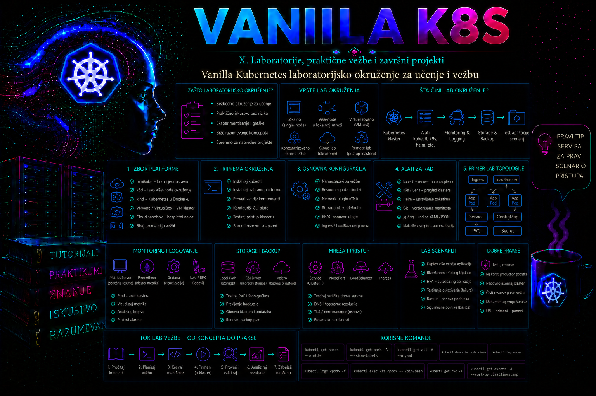

Vanilla Kubernetes

Dobro projektovano laboratorijsko okruženje omogućava administratoru da istražuje Kubernetes arhitekturu, izvodi kontrolisane promene, izaziva kvarove i vežba oporavak bez rizika po produkcione sisteme. Cilj laboratorije nije samo da nekoliko podova dobije status Running, već da okruženje dovoljno verno predstavlja način na koji funkcioniše samostalno upravljan vanilla Kubernetes klaster: svaki čvor ima sopstveni operativni sistem, mrežni identitet, container runtime i kubelet, dok se control plane i radna opterećenja razdvajaju na različite virtuelne mašine.
U ovoj lekciji gradi se tročvorni klaster pomoću alata kubeadm, containerd runtime-a i Calico CNI dodatka. Referentno okruženje koristi jedan control plane čvor i dva worker čvora. Takva topologija nije visoko dostupna i ne predstavlja preporučenu produkcionu arhitekturu, ali je dovoljno realistična za učenje raspoređivanja podova, mrežne komunikacije, servisa, NetworkPolicy pravila, kvarova čvorova, upravljanja sertifikatima, nadogradnji i osnovnog oporavka.
Namena i granice laboratorijskog klastera
Vanilla Kubernetes označava Kubernetes klaster koji nije vezan za upravljanu cloud uslugu ili komercijalnu distribuciju sa dodatnim kontrolnim slojem. Administrator sam obezbeđuje virtuelne ili fizičke servere, operativni sistem, mrežu, runtime, CNI, skladište, monitoring, backup i lifecycle postupke. Upravo zato laboratorija zasnovana na kubeadm pruža dobar uvid u komponente koje su na upravljanim platformama često skrivene.
kubeadm automatizuje bezbedno inicijalno podizanje minimalnog klastera. On generiše sertifikate, kubeconfig datoteke i statičke Pod manifeste za API server, scheduler, controller manager i lokalni etcd, ali ne kreira virtuelne mašine, ne bira CNI, ne obezbeđuje trajno skladište i ne instalira enterprise monitoring. Administrator zbog toga mora da razume granicu između bootstrap alata i kompletne platforme.
Referentna laboratorija pogodna je za vežbanje administracije resursa, RBAC-a, mrežnih politika, rollout-a, skaliranja, troubleshooting-a i nadogradnje. Nije odgovarajuća za merenje produkcionih performansi, testiranje visoke dostupnosti control plane-a, čuvanje važnih podataka ili objavljivanje servisa na Internetu. Jedan control plane predstavlja jedinstvenu tačku otkaza, lokalni diskovi nisu redundantni, a laboratorijski sertifikati i pristupni podaci obično nisu integrisani sa organizacionim PKI i IAM sistemima.
Referentna arhitektura
Referentni dizajn koristi tri zasebne virtuelne mašine i administratorsku radnu stanicu. Sve adrese su laboratorijske i moraju se pre primene uporediti sa lokalnim LAN, VPN, hipervizorskim i drugim klasterskim rutama. Jedan control plane čvor je namerno pojednostavljenje za učenje: nema redundantnog API endpoint-a niti redundantnog etcd-a, pa njegov kvar zaustavlja upravljanje klasterom.
| Čvor | Uloga | IP adresa | Interfejs | OS | Minimalni resursi | Preporučeni resursi |
|---|---|---|---|---|---|---|
| k8s-cp01 | control plane i lokalni etcd | 192.168.56.10 | ens33 ili lokalni ekvivalent | Ubuntu Server 24.04 LTS | 2 vCPU, 4 GB RAM, 40 GB | 4 vCPU, 8 GB RAM, 60 GB |
| k8s-worker01 | worker | 192.168.56.11 | ens33 ili lokalni ekvivalent | Ubuntu Server 24.04 LTS | 2 vCPU, 4 GB RAM, 40 GB | 4 vCPU, 8 GB RAM, 60 GB |
| k8s-worker02 | worker | 192.168.56.12 | ens33 ili lokalni ekvivalent | Ubuntu Server 24.04 LTS | 2 vCPU, 4 GB RAM, 40 GB | 4 vCPU, 8 GB RAM, 60 GB |
| Element | Referentna vrednost | Namena i dokaz |
|---|---|---|
| Administratorska radna stanica | Linux Mint ili drugi SSH/kubectl host u 192.168.56.0/24 | SSH ključ, pristup TCP 22 čvorovima i TCP 6443 API serveru; ne čuva nezaštićen admin.conf |
| Host/Node mreža | 192.168.56.0/24 | Stabilne Node IP adrese; potvrda sa ip route i kubectl get nodes -o wide |
| Pod CIDR | 172.20.0.0/16 | Calico IP pool; ne sme biti LAN, VPN ili Service ruta |
| Service CIDR | 10.96.0.0/12 | Virtuelne ClusterIP adrese; ne rutiraju se kao host mreža |
| LoadBalancer pool | 192.168.56.200–192.168.56.219, rezervisano | Ne koristi se u ovom dodatku; ostavlja se za naredni projekat i isključuje iz DHCP pool-a |
| Laboratorijski DNS domen | lab.tashizza.internal | Host zapisi ili dosledan /etc/hosts; primer: k8s-cp01.lab.tashizza.internal |
| Kubernetes cluster domain | cluster.local | Interni Service DNS; nije isto što i host DNS domen |
| Vreme | systemd-timesyncd ili organizacioni NTP | timedatectl show -p NTPSynchronized --value vraća yes |
| Repozitorijumi i registri | Ubuntu, pkgs.k8s.io, registry.k8s.io, ghcr.io/quay.io prema CNI-u | DNS, TLS i izlazni HTTPS rade sa svakog čvora |
Promenljive laboratorije i verzijska odluka
| Oznaka | Vrednost u ovoj laboratoriji | Pravilo |
|---|---|---|
CONTROL_PLANE_IP | 192.168.56.10 | Statička ili DHCP rezervisana adresa |
WORKER1_IP / WORKER2_IP | 192.168.56.11 / 192.168.56.12 | Jedinstvene adrese u host mreži |
POD_CIDR | 172.20.0.0/16 | Mora odgovarati kubeadm i Calico konfiguraciji |
SERVICE_CIDR | 10.96.0.0/12 | Ne sme se preklapati ni sa jednom rutom |
KUBERNETES_MINOR | v1.36 | Namenski pkgs.k8s.io kanal; bira se konkretan patch iz tog kanala |
KUBERNETES_VERSION | v1.36.0 u referentnoj konfiguraciji | Pre izvođenja uskladiti sa stvarno instaliranim kubeadm paketom; ne koristiti neprovereni latest |
CALICO_VERSION | v3.32.1 | Manifest preuzeti iz zvaničnog, verzionisanog izvora i pregledati pre primene |
Kubernetes 1.36 koristi kubeadm.k8s.io/v1beta4. Paketni kanal, kubeadm, kubelet, control plane image-i, CRI v1 podrška runtime-a i podržana Calico verzija proveravaju se ponovo neposredno pre izvođenja. Ubuntu 24.04 paket containerd-a može pripadati grani 1.7 ili novijoj, pa se putanja CRI plugin konfiguracije ne pretpostavlja: generiše se konfiguracija za stvarno instaliranu verziju, zatim proveravaju containerd --version, containerd config dump i crictl info. Kubernetes 1.36 može automatski preuzeti cgroup driver preko CRI RuntimeConfig kada runtime to podržava; eksplicitna vrednost systemd ipak ostaje dokumentovana zbog jasnog i kompatibilnog ponašanja.
Ako se vrednosti privremeno unesu kao shell promenljive, one važe samo u toj shell sesiji. Pre upotrebe obavezno se proveravaju pomoću printf '%s\n' "$CONTROL_PLANE_IP" "$POD_CIDR". Prazna promenljiva ne sme se koristiti u komandi koja menja stanje, a destruktivne komande u završnoj fazi namerno koriste eksplicitne putanje, ne promenljive.
Svi čvorovi koriste Ubuntu Server 24.04 LTS, systemd, containerd, kubelet, kubeadm i kubectl iz repozitorijuma za Kubernetes 1.36. Pod mreža koristi opseg 172.20.0.0/16, Service mreža podrazumevani opseg 10.96.0.0/12, a mreža virtuelnih mašina 192.168.56.0/24. Ovi opsezi ne smeju da se preklapaju sa fizičkom mrežom, VPN rutama, drugim laboratorijama ili mrežama koje koristi hipervizor.
Statičke ili rezervisane DHCP adrese su važne zato što kubelet, API server sertifikati i join postupak zavise od stabilne komunikacije među čvorovima. DNS imena moraju dosledno da se razrešavaju, lokalno preko DNS servera ili privremeno preko datoteke /etc/hosts. Promena hostname-a ili IP adrese nakon inicijalizacije može prekinuti TLS validaciju, pristup API serveru i komunikaciju između čvorova.
Laboratorijske virtuelne mašine treba povezati na mrežu koja omogućava međusobnu komunikaciju i pristup repozitorijumima. NAT mreža sa odvojenim internim segmentom često je bezbednija od direktnog bridged povezivanja. API server na portu TCP 6443 ne treba izlagati nepoverljivoj mreži. Administratorski SSH pristup ograničava se na upravljačku stanicu, a pristup korišćenjem lozinke treba zameniti SSH ključevima.
Operativni sistem, vreme i mrežni preduslovi
Kubernetes zahteva da čvorovi imaju jedinstvena imena, MAC adrese i identifikatore proizvoda. Kloniranje virtuelne mašine bez regenerisanja identiteta može izazvati nejasne registracije čvorova. Pre instalacije proveravaju se hostname, IP konfiguracija, DNS, podrazumevana ruta, sinhronizacija vremena i dostupnost potrebnih portova. Vremensko odstupanje može uticati na validnost sertifikata, tokene i korelaciju logova.
Swap se tradicionalno isključuje zato što kubelet mora predvidivo da upravlja memorijskim pritiskom i eviction mehanizmima. Novije verzije Kubernetes-a podržavaju kontrolisanu upotrebu swap-a kroz eksplicitnu kubelet konfiguraciju, ali to nije podrazumevano laboratorijsko ponašanje. Za ovu laboratoriju swap se isključuje kako bi konfiguracija ostala jasna i kompatibilna sa standardnim kubeadm preduslovima.
Kernel mora prosleđivati bridged IPv4 saobraćaj kroz netfilter i dozvoliti IP forwarding. CNI dodatak zatim kreira interfejse, rute i pravila potrebna za Pod-to-Pod i Pod-to-Service komunikaciju. Ako su kernel moduli ili sysctl vrednosti pogrešni, podovi mogu biti kreirani, ali neće imati funkcionalnu mrežu. Takav simptom se razlikuje od problema scheduler-a: pod dobija čvor, ali ostaje u stanju ContainerCreating ili ne može da pristupi drugim adresama.
Container runtime i cgroup upravljanje
Kubernetes više ne upravlja kontejnerima preko ugrađenog Docker interfejsa. Kubelet komunicira sa runtime-om preko Container Runtime Interface-a. U laboratoriji se koristi containerd sa aktivnim CRI dodatkom. Komanda ctr namenjena je niskom nivou rada sa containerd-om i ne prikazuje Kubernetes objekte na isti način kao CRI. Za dijagnostiku runtime-a administrator koristi crictl, dok za deklarativno upravljanje klasterom koristi kubectl.
Kubelet i runtime moraju dosledno koristiti cgroup upravljački program. Na savremenim systemd distribucijama preporučuje se systemd cgroup driver. Nepodudaranje može dovesti do nestabilnog upravljanja procesima, pogrešnog obračuna resursa ili neuspešnog pokretanja podova. Konfiguracija containerd-a zato eksplicitno uključuje SystemdCgroup = true, a kubeadm generiše odgovarajuću kubelet konfiguraciju.
Containerd konfiguracija se nalazi u /etc/containerd/config.toml. Posle svake izmene administrator proverava sintaksu posredno kroz uspešno ponovno pokretanje servisa, status CRI dodatka i runtime odgovor. Sam status active (running) nije dovoljan ako je CRI dodatak onemogućen; zato se dodatno koriste ctr plugins ls i crictl info.
Uloga kubeadm-a i tok inicijalizacije
Na control plane čvoru kubeadm init izvršava preflight provere, generiše PKI materijal, kubeconfig datoteke i statičke manifeste u direktorijumu /etc/kubernetes/manifests. Kubelet posmatra taj direktorijum i preko containerd-a pokreće control plane komponente kao statičke podove. Njih ne kreira Deployment i njihov lifecycle nije isti kao kod običnih aplikacionih podova.
Podaci klastera čuvaju se u etcd-u, koji je u ovoj topologiji lokalni statički pod na k8s-cp01. Direktorijum /var/lib/etcd zato predstavlja kritičnu lokaciju. Gubitak tog direktorijuma bez upotrebljivog snapshot-a znači gubitak deklarativnog stanja klastera, iako datoteke aplikacija ili container image slojevi možda još postoje na worker čvorovima.
Worker se priključuje naredbom kubeadm join. Bootstrap token dokazuje da novi čvor ima pravo da započne proces, dok hash CA javnog ključa sprečava povezivanje sa lažnim control plane-om. Token je vremenski ograničen i ne treba ga čuvati u javnom repozitorijumu, shell istoriji ili dokumentaciji promene. Kada istekne, generiše se nova join komanda.
CNI i mrežni model laboratorije
Kubernetes definiše mrežni model, ali ga sam kubeadm ne implementira. Svaki pod treba da dobije jedinstvenu IP adresu i da, u okviru pravila mrežne politike, može direktno da komunicira sa drugim podovima. CNI dodatak kreira potrebne interfejse i rute. Dok CNI nije instaliran, CoreDNS podovi obično ostaju u stanju Pending, a čvorovi mogu imati uslov NetworkUnavailable.
Calico u laboratoriji obezbeđuje CNI, upravljanje Pod adresama i podršku za Kubernetes NetworkPolicy. Operator pristup odvaja instalacionu logiku od korisničke konfiguracije. Pod mreža 172.20.0.0/16 mora odgovarati vrednosti zadatoj tokom kubeadm init. Ako se opsezi razlikuju, podovi mogu dobiti pogrešne adrese ili mrežne komponente neće postati spremne.
Mrežna politika nije automatski podrazumevano zabrani-sve mehanizam. Bez NetworkPolicy objekta, namespace obično dozvoljava saobraćaj u skladu sa standardnim Kubernetes modelom. Administrator mora eksplicitno definisati izolaciju i dozvoljene tokove. Negativni testovi su zato važni: nije dovoljno potvrditi da dozvoljena konekcija radi, već i da zabranjena konekcija zaista ne prolazi.
Administrativni pristup i zaštita laboratorije
Datoteka /etc/kubernetes/admin.conf daje veoma široka administratorska prava i mora se tretirati kao tajna. Njeno kopiranje u korisnički direktorijum olakšava rad, ali ne smanjuje privilegije. Ne treba je slati elektronskom poštom, ugrađivati u skripte ili trajno koristiti na deljenim računarima. Za redovan rad realnije je kreirati posebne identitete i RBAC ovlašćenja, dok se admin.conf čuva za kontrolisane administratorske intervencije.
Snapshot virtuelne mašine koristan je za brzo vraćanje laboratorije, ali nije zamena za Kubernetes backup. Nekonzistentan snapshot uključenog control plane čvora može obuhvatiti disk dok etcd upis još traje. Za vežbu oporavka treba praviti etcd snapshot alatima koji razumeju etcd format, čuvati potrebne sertifikate i dokumentovati tačnu verziju klastera.
Integrisani praktikum: izgradnja tročvornog kubeadm klastera
Mapa laboratorije
| Faza | Mesto izvršavanja | Promena | Dokaz uspeha |
|---|---|---|---|
| 1–2. Topologija, verzije i VM | administratorska stanica i hipervizor | inventar i tri jedinstvena hosta | nema CIDR sukoba; resursi i identiteti provereni |
| 3. Imena, DNS i vreme | svi čvorovi | stabilan identitet i vreme | getent i timedatectl |
| 4–5. Mreža, kernel i swap | svi čvorovi, sudo | dozvoljeni tokovi, moduli i sysctl | rute/portovi, lsmod, sysctl, swapon |
| 6–7. Runtime i paketi | svi čvorovi, sudo | containerd CRI i verzionisani Kubernetes alati | crictl info, verzije i package hold |
| 8. Pre-flight | svi čvorovi; cp01 dodatno | sačuvano početno stanje i image-i | nema nerešenih pre-flight grešaka |
| 9–10. Control plane i pristup | samo k8s-cp01 | PKI, etcd, statički Podovi i kubeconfig | API dostupan; kubeconfig mode 600 |
| 11–12. CNI i worker-i | cp01, zatim worker-i | Pod mreža i priključenje čvorova | Calico spreman; sva tri čvora Ready |
| 13–14. Validacija i workload | k8s-cp01 | test aplikacija, Service i politika | DNS, cross-node Pod tok, endpointi, HTTP i self-healing |
| 15. Greške | ograničeni laboratorijski cilj | reverzibilan kvar | uzrok dokazan, korekcija i oporavak zabeleženi |
| 16. Evidencija/odluka | administratorska stanica i čvorovi | checkpoint ili destruktivan reset | arhiva dokaza ili potvrđeno čisto stanje |
Faze 1–2: projektovanje i priprema virtuelnih mašina
Mesto, nalog i uticaj. Inventar se priprema na administratorskoj stanici bez promene čvorova; VM resursi i mrežni adapteri menjaju se u hipervizoru dok su VM-ovi isključeni. Na hostovima labadmin sa sudo samo čita inventar. Ne klonirati već inicijalizovan Kubernetes čvor. Ako se koristi template, identitet instance i SSH host ključevi regenerišu se prema pravilima distribucije pre uključivanja kopije u istu mrežu.
# Svi čvorovi; read-only inventar
hostnamectl
lscpu | sed -n '1,15p'
free -h
lsblk -o NAME,SIZE,FSTYPE,MOUNTPOINTS
ip -brief link
cat /etc/machine-id
sudo cat /sys/class/dmi/id/product_uuid
Očekuju se jedinstveni hostname, MAC, machine-id i product UUID, najmanje resursi iz tabele i dovoljan slobodan disk. Duplirani identitet prekida fazu: VM se izoluje i ponovo priprema. Kontrolna tačka je dokumentovan inventar tri jedinstvena hosta i snapshot čistog, ugašenog OS-a pre klasterskog stanja.
Faze 3–16: sekvencijalno izvršavanje
Poslovni i tehnički kontekst. Infrastrukturni tim priprema izolovanu laboratoriju u kojoj administratori treba da vežbaju instalaciju, mrežnu segmentaciju, raspoređivanje aplikacija i troubleshooting pre rada na produkcionim Kubernetes platformama. Cilj je podići ponovljiv tročvorni klaster, potvrditi komunikaciju između podova i servisa, dokazati sprovođenje NetworkPolicy pravila i dokumentovati postupak čišćenja.
Referentno okruženje i preduslovi. Tri sveže Ubuntu Server 24.04 virtuelne mašine imaju IP adrese i resurse iz prethodne tabele. Korisnik labadmin postoji na svim čvorovima, prijavljuje se SSH ključem i ima pravo sudo. Internet pristup je dozvoljen prema Ubuntu, Kubernetes i Calico repozitorijumima. Komande označene sa „svi čvorovi” izvršavaju se na sve tri virtuelne mašine.
-
Provera identiteta, mreže i vremena na svim čvorovima.
Pre promene mora se potvrditi da svaki čvor ima očekivano ime i adresu, da se imena međusobno razrešavaju i da je sistemsko vreme sinhronizovano.
Ako laboratorija nema DNS zapis, na sva tri čvora dodaje se ista kontrolisana mapa:hostnamectl ip -brief address ip route timedatectl getent hosts k8s-cp01 k8s-worker01 k8s-worker02 ping -c 2 192.168.56.10
Validacija:sudo tee -a /etc/hosts >/dev/null <<'EOF' 192.168.56.10 k8s-cp01 192.168.56.11 k8s-worker01 192.168.56.12 k8s-worker02 EOFgetent hostsmora vratiti tačno jednu očekivanu adresu za svaki naziv. Duplikati ili različiti odgovori moraju se ukloniti pre inicijalizacije. -
Faza 4 – mrežna povezanost, portovi, firewall, MTU i rutiranje na svim čvorovima.
Sledeće komande naloga
labadminsamo čitaju stanje. Pre inicijalizacije očekuje se da host mreža ne sadrži rutu koja obuhvata Pod ili Service CIDR i da svi čvorovi koriste kompatibilan MTU. Test TCP 6443 ima smisla tek kada API server sluša; pre toga očekivaniconnection refuseddokazuje putanju do hosta, dok timeout upućuje na firewall ili rutu.ip -4 route ip link show ping -c 2 192.168.56.10 getent ahostsv4 k8s-cp01 sudo ss -lntup curl -k --connect-timeout 3 https://192.168.56.10:6443/livez
Kontrolna tačka: dokumentovane su firewall zone i pravila; Node IP mreža,Odredište Port/protokol Ko treba da pristupa Napomena API server TCP 6443 svi čvorovi i administracija ulaz na control plane; ne izlagati nepoverljivoj mreži etcd TCP 2379–2380 lokalne control plane komponente u single-node stacked topologiji ne otvarati široko kubelet API TCP 10250 control plane ka svim čvorovima potreban za logove, exec i metrike scheduler/controller-manager TCP 10259/10257 lokalni control plane secure portovi; ne izlagati LAN-u NodePort TCP/UDP 30000–32767 samo ako se NodePort koristi nije potreban za ClusterIP test u ovoj laboratoriji Calico zavisi od VXLAN/BGP izbora među čvorovima primeniti tačne zvanične zahteve iz izabrane Calico konfiguracije 172.20.0.0/16i10.96.0.0/12ne preklapaju se; efektivni MTU je isti ili je CNI MTU svesno prilagođen tunelskom overhead-u. Ne gasiti firewall bez analize. Ako tok ne radi, sa oba kraja proveriti rutu, listener i pravilo, pa menjati samo pravilo za konkretan izvor, odredište i port. -
Priprema kernel-a i isključivanje swap-a na svim čvorovima.
Moduli
overlayibr_netfilteromogućavaju kontejnerski overlay filesystem i obradu bridged saobraćaja. IP forwarding je neophodan za rutiranje paketa između interfejsa.
Validacija:sudo swapoff -a sudo sed -ri '/\sswap\s/s/^#?/#/' /etc/fstab cat <<'EOF' | sudo tee /etc/modules-load.d/k8s.conf overlay br_netfilter EOF sudo modprobe overlay sudo modprobe br_netfilter cat <<'EOF' | sudo tee /etc/sysctl.d/99-kubernetes-cri.conf net.bridge.bridge-nf-call-iptables = 1 net.bridge.bridge-nf-call-ip6tables = 1 net.ipv4.ip_forward = 1 EOF sudo sysctl --systemswapon --show lsmod | grep -E 'overlay|br_netfilter' sysctl net.bridge.bridge-nf-call-iptables net.ipv4.ip_forwardswapon --showne treba da vrati uređaj, a obe sysctl vrednosti moraju biti1. -
Instalacija i konfiguracija containerd-a na svim čvorovima.
Instalira se distribucioni paket, generiše početna konfiguracija i uključuje systemd cgroup driver.
Validacija:sudo apt-get update sudo apt-get install -y containerd sudo mkdir -p /etc/containerd containerd config default | sudo tee /etc/containerd/config.toml >/dev/null sudo sed -i 's/SystemdCgroup = false/SystemdCgroup = true/' /etc/containerd/config.toml sudo systemctl restart containerd sudo systemctl enable containerd
Runtime mora biti aktivan, CRI dodatak u stanjusystemctl is-active containerd sudo ctr plugins ls | grep -E 'io.containerd.grpc.v1.cri|io.containerd.cri.v1.runtime' grep -n 'SystemdCgroup' /etc/containerd/config.tomlok, a relevantna konfiguracija mora prikazatitrue. Ako servis ne može da se pokrene, prva dijagnostika jesudo journalctl -u containerd -b --no-pager. -
Instalacija Kubernetes paketa na svim čvorovima.
Za svaku Kubernetes minor verziju koristi se namenski
pkgs.k8s.iorepozitorijum. Paketi se zadržavaju kako nekontrolisani sistemski upgrade ne bi promenio verziju samo jednog čvora.
Validacija:sudo apt-get install -y apt-transport-https ca-certificates curl gpg sudo mkdir -p -m 755 /etc/apt/keyrings curl -fsSL https://pkgs.k8s.io/core:/stable:/v1.36/deb/Release.key \ | sudo gpg --dearmor -o /etc/apt/keyrings/kubernetes-apt-keyring.gpg echo 'deb [signed-by=/etc/apt/keyrings/kubernetes-apt-keyring.gpg] https://pkgs.k8s.io/core:/stable:/v1.36/deb/ /' \ | sudo tee /etc/apt/sources.list.d/kubernetes.list sudo apt-get update sudo apt-get install -y kubelet kubeadm kubectl cri-tools sudo apt-mark hold kubelet kubeadm kubectl sudo systemctl enable kubelet
Sva tri Kubernetes paketa treba da pripadaju istoj minor verziji. Kubelet može periodično prijavljivati neuspeh prekubeadm version kubectl version --client kubelet --version apt-mark showhold | grep -E 'kubeadm|kubectl|kubelet'initilijoinpostupka jer još nema konfiguraciju klastera; to je očekivano privremeno stanje. -
Podešavanje CRI dijagnostičkog klijenta na svim čvorovima.
crictlse usmerava na containerd socket kako bi se izbeglo automatsko isprobavanje više endpoint-a.
Validacija: izlaz mora sadržati runtime informacije bez poruke o nedostupnom endpoint-u. Greškacat <<'EOF' | sudo tee /etc/crictl.yaml runtime-endpoint: unix:///run/containerd/containerd.sock image-endpoint: unix:///run/containerd/containerd.sock timeout: 10 debug: false EOF sudo crictl infounknown service runtime.v1.RuntimeServiceukazuje na neaktivan ili pogrešno konfigurisan CRI dodatak. -
Inicijalizacija control plane čvora.
Pre state-changing komande sačuvati početni dokaz i preuzeti potrebne image-e. Na
k8s-cp01sledeće komande prvo čitaju stanje, akubeadm config images pullmenja lokalni runtime cache bez formiranja klastera:
Ako stvarnimkdir -p ~/k8s-lab/evidence date -Is | tee ~/k8s-lab/evidence/start-time.txt containerd --version | tee ~/k8s-lab/evidence/containerd-version.txt kubeadm version -o short | tee ~/k8s-lab/evidence/kubeadm-version.txt sudo crictl info > ~/k8s-lab/evidence/crictl-info.json sudo kubeadm config images list --kubernetes-version v1.36.0 sudo kubeadm config images pull --kubernetes-version v1.36.0 \ --cri-socket unix:///run/containerd/containerd.sock sudo crictl imageskubeadm version -o shortnijev1.36.0, konfiguraciona vrednost i image komande uskladiti sa instaliranim podržanim patch izdanjem pre nastavka. Pre-flight upozorenje se klasifikuje i dokumentuje; greška se otklanja. Opcija--ignore-preflight-errors=allnije korektivna mera. Ovaj korak izvršava se samo nak8s-cp01. Konfiguraciona datoteka se čuva radi ponovljivosti i revizije promene.
Validacija: završni izlaz mora navesti da je control plane uspešno inicijalizovan i prikazati join komandu. Pošto izlaz sadrži osetljivu bootstrap informaciju, datoteka se odmah štiti samkdir -p ~/k8s-lab cat <<'EOF' > ~/k8s-lab/kubeadm-init.yaml apiVersion: kubeadm.k8s.io/v1beta4 kind: InitConfiguration localAPIEndpoint: advertiseAddress: 192.168.56.10 bindPort: 6443 nodeRegistration: criSocket: unix:///run/containerd/containerd.sock --- apiVersion: kubeadm.k8s.io/v1beta4 kind: ClusterConfiguration clusterName: tashizza-lab kubernetesVersion: v1.36.0 controlPlaneEndpoint: 192.168.56.10:6443 networking: serviceSubnet: 10.96.0.0/12 podSubnet: 172.20.0.0/16 dnsDomain: cluster.local --- apiVersion: kubelet.config.k8s.io/v1beta1 kind: KubeletConfiguration cgroupDriver: systemd EOF sudo kubeadm config validate --config ~/k8s-lab/kubeadm-init.yaml sudo kubeadm init --config ~/k8s-lab/kubeadm-init.yaml \ | tee ~/k8s-lab/kubeadm-init-output.txtchmod 600 ~/k8s-lab/kubeadm-init-output.txti ne commit-uje. Ako preflight provera prijavi zauzet port ili postojeći manifest, ne treba koristiti--ignore-preflight-errors=all; prvo se utvrđuje da li je čvor ranije delimično inicijalizovan. -
Konfiguracija kubectl pristupa na control plane čvoru.
Validacija: API server mora biti dostupan. Čvor u ovoj fazi može bitimkdir -p "$HOME/.kube" sudo cp /etc/kubernetes/admin.conf "$HOME/.kube/config" sudo chown "$(id -u):$(id -g)" "$HOME/.kube/config" chmod 600 "$HOME/.kube/config" kubectl cluster-info kubectl get nodes -o wide kubectl get pods -n kube-system -o wideNotReady, a CoreDNSPending, jer CNI još nije instaliran. To je normalno stanje, a ne razlog za ponavljanjekubeadm init. -
Instalacija Calico CNI dodatka.
Na
k8s-cp01preuzimaju se operator i referentni custom resources, a zatim se proverava i prilagođava Pod CIDR.
Validacija:cd ~/k8s-lab curl -fsSLO https://raw.githubusercontent.com/projectcalico/calico/v3.32.1/manifests/tigera-operator.yaml curl -fsSLO https://raw.githubusercontent.com/projectcalico/calico/v3.32.1/manifests/custom-resources.yaml sed -i 's#cidr: 192.168.0.0/16#cidr: 172.20.0.0/16#' custom-resources.yaml grep -A8 -B4 'cidr:' custom-resources.yaml kubectl create -f tigera-operator.yaml kubectl create -f custom-resources.yaml
Sačekati da Calico komponente postanu spremne, akubectl get tigerastatus kubectl get pods -n tigera-operator kubectl get pods -n calico-system -o wide kubectl get nodesk8s-cp01dobije statusReady. Ako operator pod radi, ali Calico čvor nije spreman, pregledaju se događaji i logovi:kubectl describe pod -n calico-system PODikubectl logs -n calico-system POD -c calico-node. -
Priključivanje worker čvorova.
Na
k8s-cp01generiše se nova kratkotrajna join komanda. Njena vrednost se prenosi bezbednim administrativnim kanalom i izvršava posebno na svakom worker-u.
Primer strukture komande, bez stvarnih vrednosti:kubeadm token create --ttl 30m --print-join-command
Validacija: na svakom worker-u proveritisudo kubeadm join 192.168.56.10:6443 \ --token <BOOTSTRAP_TOKEN> \ --discovery-token-ca-cert-hash sha256:<CA_PUBLIC_KEY_HASH>sudo systemctl status kubeletisudo crictl ps. Na control plane čvoru:
Sva tri čvora moraju imati statuskubectl get nodes -o wide kubectl wait --for=condition=Ready node/k8s-worker01 --timeout=180s kubectl wait --for=condition=Ready node/k8s-worker02 --timeout=180sReady, očekivane interne IP adrese i istu minor verziju kubelet-a. -
Funkcionalni test raspoređivanja, DNS-a i servisa.
Kreira se namespace i jednostavna aplikacija sa dve replike. Podovi treba da budu raspoređeni na worker čvorove, a Service treba da obezbedi stabilan DNS naziv.
Test klijent proverava DNS i HTTP odgovor:cat <<'EOF' > ~/k8s-lab/lab-app.yaml apiVersion: v1 kind: Namespace metadata: name: lab-app --- apiVersion: apps/v1 kind: Deployment metadata: name: web namespace: lab-app spec: replicas: 2 selector: matchLabels: app: web template: metadata: labels: app: web spec: containers: - name: nginx image: nginx:1.29 ports: - containerPort: 80 resources: requests: cpu: 50m memory: 64Mi limits: cpu: 250m memory: 128Mi --- apiVersion: v1 kind: Service metadata: name: web namespace: lab-app spec: selector: app: web ports: - port: 80 targetPort: 80 EOF kubectl apply -f ~/k8s-lab/lab-app.yaml kubectl rollout status deployment/web -n lab-app --timeout=180s kubectl get pods -n lab-app -o wide kubectl get service,endpointslices -n lab-app
Očekivani rezultat: DNS vraća ClusterIP servisa, a HTTP zahtev vraća početnu nginx stranicu. EndpointSlice mora sadržati adrese oba spremna web poda. Za dokaz međučvorne Pod komunikacije nije dovoljno pretpostaviti da dve replike rade. Proveriti na kojim su čvorovima, izabrati IP replike na drugom čvoru odkubectl run test-client -n lab-app \ --image=curlimages/curl:8.15.0 \ --restart=Never --command -- sleep 3600 kubectl wait --for=condition=Ready pod/test-client -n lab-app --timeout=120s kubectl exec -n lab-app test-client -- nslookup web.lab-app.svc.cluster.local kubectl exec -n lab-app test-client -- curl -fsS http://webtest-clienti izvršiti direktan HTTP zahtev ka tom Pod IP-u. Ako scheduler smesti obe web replike na isti worker, privremeno primenitipodAntiAffinityili skalirati na više replika; ne proglašavati cross-node test uspešnim bez dokaza iz koloneNODE.
Zatim se dokazuje deklarisano samoisceljenje. Brisanje jednog aplikacionog Pod-a menja stanje samo u namespace-ukubectl get pods -n lab-app -o wide kubectl exec -n lab-app test-client -- curl -fsS http://<REMOTE_POD_IP> kubectl get endpointslices -n lab-app -l kubernetes.io/service-name=web -o widelab-app; Deployment mora kreirati zamenu i vratiti dve dostupne replike.
Kontrolna tačka: novi Pod ima novi UID, Deployment ponovo ima dve dostupne replike, Service EndpointSlice pokazuje spremne endpoint-e, DNS i HTTP test i dalje prolaze. Ako ne prolaze, prvo se pregledaju Deployment uslovi, događaji novog Pod-a i image/CNI stanje; ne kreira se ručno zamenski Pod.kubectl get pods -n lab-app -l app=web kubectl delete pod -n lab-app <ONE_WEB_POD_NAME> kubectl rollout status deployment/web -n lab-app --timeout=180s kubectl get pods -n lab-app -l app=web -o wide kubectl get events -n lab-app --sort-by=.metadata.creationTimestamp | tail -n 20 -
Negativni test NetworkPolicy kontrole.
Prvo se uvodi default-deny ingress politika. Nakon toga prethodno uspešan zahtev mora prestati da radi, što potvrđuje da CNI zaista sprovodi politiku.
Validacija negativnog testa: zahtev bez odgovarajuće oznake treba da istekne ili bude odbijen. Zatim se dozvola dodeljuje oznakom:cat <<'EOF' > ~/k8s-lab/network-policy.yaml apiVersion: networking.k8s.io/v1 kind: NetworkPolicy metadata: name: default-deny-ingress namespace: lab-app spec: podSelector: {} policyTypes: - Ingress --- apiVersion: networking.k8s.io/v1 kind: NetworkPolicy metadata: name: allow-client-to-web namespace: lab-app spec: podSelector: matchLabels: app: web policyTypes: - Ingress ingress: - from: - podSelector: matchLabels: access: web ports: - protocol: TCP port: 80 EOF kubectl apply -f ~/k8s-lab/network-policy.yaml kubectl exec -n lab-app test-client -- \ curl --connect-timeout 3 -fsS http://web
Poslednji zahtev mora ponovo uspeti. Ako oba zahteva uspevaju, proveravaju se NetworkPolicy objekti, selektori i Calico status; ako oba ne uspevaju, proveravaju se oznaka poda, port i EndpointSlice.kubectl label pod test-client -n lab-app access=web kubectl exec -n lab-app test-client -- curl -fsS http://web -
Provera logova i osnovna dijagnostika.
Aplikacioni logovi čitaju se preko API-ja, dok se node servisi proveravaju kroz systemd journal. Statički control plane podovi pregledaju se pomoću
kubectlilicrictlkada API nije dostupan.
Tumačenje:kubectl logs -n lab-app deployment/web --tail=20 kubectl get events -n lab-app --sort-by=.metadata.creationTimestamp kubectl get events -A --sort-by=.metadata.creationTimestamp | tail -n 30 sudo journalctl -u kubelet -b --no-pager | tail -n 50 sudo journalctl -u containerd -b --no-pager | tail -n 50 sudo crictl pods sudo crictl ps -aFailedSchedulingukazuje na problem kapaciteta, taint-a ili selektora;ErrImagePulliImagePullBackOffna image ili registry problem;FailedCreatePodSandBoxčesto upućuje na CNI ili runtime;CrashLoopBackOffznači da je kontejner pokrenut, ali se ponavljano završava. -
Cleanup aplikacije i bezbedan reset klastera.
Opcija A – očuvanje klastera. Ovo je preporučena odluka kada se laboratorija koristi kao osnova za naredne integrisane projekte. Ne brišu se
lab-appi NetworkPolicy ako će služiti kao regression test; umesto toga beleže se verzije, čvorovi, CIDR-i i konačni dokaz, uklanjaju se ili opozivaju nepotrebni bootstrap tokeni i pravi kontrolisan checkpoint ugašenih VM-ova. Snapshot nije zamena za etcd backup i ne sme se predstavljati kao produkcioni DR.
Za ponovno korišćenje klastera dovoljno je ukloniti namespace:# k8s-cp01; read-only evidencija kubectl get nodes -o wide > ~/k8s-lab/evidence/final-nodes.txt kubectl get pods -A -o wide > ~/k8s-lab/evidence/final-pods.txt kubectl get events -A --sort-by=.metadata.creationTimestamp \ > ~/k8s-lab/evidence/final-events.txt kubeadm version -o short > ~/k8s-lab/evidence/final-kubeadm-version.txt kubeadm token list sudo kubeadm certs check-expiration
Opcija B – potpuno resetovanje; destruktivan laboratorijski postupak. Koristi se samo kada se laboratorija namerno vraća u stanje pre kubeadm bootstrap-a. Pre toga kopirati inventar, kubeadm YAML, verzije, događaje i relevantne journal isečke na administratorsku stanicu, proveriti backup i tačno identifikovati sva tri ciljana čvora. Na control plane-u reset uklanja lokalnog stacked etcd člana i klastersko stanje te laboratorije. Najpre se koristi read-only dry-run, zatim se potvrđena naredba izvršava na worker čvorovima i na kraju na control plane čvoru.kubectl delete namespace lab-app kubectl get namespace lab-app
Validacija:# Svaki tačno identifikovan čvor; read-only pregled hostnamectl --static sudo kubeadm reset --dry-run --cri-socket unix:///run/containerd/containerd.sock # DESTRUKTIVNO; worker-i prvo, control plane poslednji sudo kubeadm reset --force \ --cri-socket unix:///run/containerd/containerd.sock # Dodatno čišćenje tek posle pregleda; eksplicitne putanje sudo ls -la /etc/cni/net.d sudo rm -rf /etc/cni/net.d ls -la "$HOME/.kube" rm -rf "$HOME/.kube"sudo crictl ps -ane treba da prikazuje prethodne Kubernetes kontejnere, a/etc/kubernetes/manifestsne treba da sadrži statičke manifeste.kubeadm resetne uklanja/etc/cni/net.d, korisnički kubeconfig, niti garantuje uklanjanje iptables, nftables ili IPVS pravila. CNI interfejsi, rute i pravila najpre se inventarišu; uklanjaju se samo zvaničnim cleanup postupkom odgovarajuće verzije CNI-a/kube-proxy-ja ili reprovision-om VM-a. Slepo izvršavanjeiptables -Fili nftables flush komande nije prihvatljivo jer može prekinuti SSH i druge host servise.
Kriterijumi prihvatanja laboratorije. Klaster je prihvaćen kada sva tri čvora najmanje deset minuta održavaju status Ready; svi sistemski podovi imaju očekivano stanje bez ponavljanih restartovanja; dve aplikacione replike rade na worker čvorovima; DNS ime web.lab-app.svc.cluster.local razrešava se iz test poda; Service vraća HTTP odgovor; default-deny politika blokira neoznačenog klijenta; oznaka access=web ponovo omogućava pristup; kubelet i containerd logovi nemaju ponavljane kritične greške; konfiguracione datoteke i rezultat validacije sačuvani su u dokumentaciji laboratorije.
Tipične greške i njihovo razlikovanje
Faza 15 koristi isti obrazac za svaki incident: zabeležiti vreme i poslednju promenu; odrediti obim; prikupiti read-only dokaze; postaviti hipotezu; potvrditi neposredni i osnovni uzrok; primeniti najmanju reverzibilnu korekciju; ponoviti početni test; dokumentovati nalaz. Privremeni workaround se koristi samo ako ne prikriva uzrok. Eksperimenti se izvode jedan po jedan, nikada istovremeno.
Scenario A: zaustavljen kubelet na jednom worker čvoru
Bezbedna granica: samo k8s-worker02, bez promene control plane-a, containerd-a ili mreže. Pre testa proveriti da su aplikacione replike raspoređene i da drugi worker ima kapacitet. Komanda systemctl stop menja stanje i zahteva sudo.
# k8s-worker02; state-changing laboratorijska simulacija
sudo systemctl stop kubelet
sudo systemctl is-active kubelet
# k8s-cp01; read-only dokazi posle isteka Node lease/grace perioda
kubectl get nodes
kubectl describe node k8s-worker02
kubectl get events -A --sort-by=.metadata.creationTimestamp | tail -n 30
# k8s-worker02; read-only lokalni dokaz, zatim korekcija
sudo journalctl -u kubelet --since '-10 minutes' --no-pager
sudo systemctl start kubelet
sudo systemctl is-active kubelet
# k8s-cp01; potvrda oporavka
kubectl wait --for=condition=Ready node/k8s-worker02 --timeout=180s
kubectl get pods -A -o wide
kubectl exec -n lab-app test-client -- curl -fsS http://web
Simptom je prelazak jednog Node objekta u NotReady posle dozvoljenog perioda, obim je jedan worker, neposredni uzrok je zaustavljen servis, a osnovni uzrok u realnom incidentu bila bi neovlašćena promena, kvar systemd jedinice ili hosta. Trajna mera je uklanjanje uzroka i kontrola promene, ne samo restart. Oporavak je potvrđen tek kada su Node, workload, DNS/Service test i novi događaji uredni.
Scenario B: istekla ili pogrešna join komanda
Bezbedna granica: vežba se na još nepriključenom worker-u ili na svežoj VM kopiji, nikada na funkcionalnom članu. Ne unosi se proizvoljan CA hash i ne koristi --discovery-token-unsafe-skip-ca-verification. Greška token id ... is invalid ili nemogućnost pronalaska JWS potpisa potvrđuje bootstrap problem; timeout ka 6443 je mrežni problem, ne token.
# k8s-cp01; read-only spisak bez deljenja kompletne tajne
kubeadm token list
# k8s-cp01; state-changing: novi token sa kratkim TTL-om i puna join komanda
kubeadm token create --ttl 30m --description tashizza-lab-worker-join \
--print-join-command
# ciljni worker; izvršiti dobijenu komandu sa sudo, bez čuvanja u repozitorijumu
sudo kubeadm join 192.168.56.10:6443 \
--token <NEW_BOOTSTRAP_TOKEN> \
--discovery-token-ca-cert-hash sha256:<VERIFIED_CA_PUBLIC_KEY_HASH>
Podrazumevani token koji kreira kubeadm init važi 24 časa; u laboratoriji se namenski generiše token od 30 minuta. Ako je token dospeo u shell istoriju, uklanjanje jedne istorijske linije nije dovoljna zaštita: token se opoziva pomoću kubeadm token delete <TOKEN_ID>, a zatim se proverava kubeadm token list.
Scenario C: DNS/Service ili CNI simptom
Bez menjanja host mreže prvo se razlikuju slojevi. kubectl get endpointslices bez endpoint-a upućuje na selector/readiness; uspešan direktan Pod IP zahtev uz neuspešan Service zahtev upućuje na Service proxy ili politiku; neuspeh direktnog cross-node Pod IP zahteva uz lokalno uspešan zahtev upućuje na CNI/rutu/MTU/firewall; neuspešan nslookup uz uspešan HTTP ka ClusterIP-u upućuje na CoreDNS ili Pod DNS konfiguraciju.
kubectl get pods -n kube-system -o wide
kubectl get endpointslices -n lab-app -o yaml
kubectl describe pod -n lab-app test-client
kubectl logs -n kube-system -l k8s-app=kube-dns --tail=100
kubectl get events -A --sort-by=.metadata.creationTimestamp | tail -n 40
kubectl get pods -n calico-system -o wide
kubectl logs -n calico-system -l k8s-app=calico-node -c calico-node --tail=100Ne menja se Pod CIDR na živom klasteru kao brza korekcija. Neusklađen CIDR je dizajnerska greška koja u ovoj laboratoriji zahteva čuvanje dokaza, uklanjanje workload-a i kontrolisanu ponovnu izgradnju ili zvaničan, verzijski podržan migracioni postupak. Ručno brisanje nasumičnih ruta, CNI interfejsa ili firewall pravila bez atribucije može proširiti kvar na host.
- Čvor ostaje NotReady. Proveravaju se
kubectl describe node, usloviReadyiNetworkUnavailable, zatim kubelet journal. Poruka o nespremnom container runtime-u razlikuje se od nespremnog CNI-a. - CoreDNS ostaje Pending. Ako nema CNI-a ili worker čvorova, scheduler i mreža nemaju uslove za normalan rad. Proveravaju se događaji poda, taint-i i stanje Calico komponenti.
- Join prijavljuje istekao token. Na control plane čvoru generiše se nova kratkotrajna join komanda. Ne isključuje se TLS provera i ne koristi se nasumičan hash.
- API server nije dostupan. Proveravaju se port 6443, statički manifest, containerd i kubelet. Kada
kubectlne radi,sudo crictl ps -aisudo crictl logs CONTAINER_IDomogućavaju lokalnu dijagnostiku. - Pod ima IP adresu, ali Service ne radi. Proveravaju se selektori servisa, EndpointSlice, readiness stanje i mrežna politika. Prazan EndpointSlice najčešće znači da oznake poda ne odgovaraju selektoru ili da pod nije spreman.
- ImagePullBackOff. Razlikuju se nepostojeći tag, nedostupan DNS, registry autentikacija i ograničenje izlaznog saobraćaja. Događaji poda obično sadrže konkretnu registry poruku.
Administratorske prakse
- Kontrola zdravlja klastera. Nakon svakog pokretanja laboratorije i svake infrastrukturne promene izvršavaju se
kubectl get nodes,kubectl get pods -Ai pregled događaja. Reakciju zahtevaju čvor koji je duže od pet minutaNotReady, sistemski pod sa ponavljanim restartima ili rast broja upozorenja. Prvo se čuva trenutno stanje, zatim proveravaju uslovi čvora i logovi. Rezultat se beleži u laboratorijski dnevnik sa datumom, uzrokom i korektivnom radnjom. - Praćenje resursa virtuelnih mašina. Pre velikih vežbi proveravaju se
free -h,df -h,df -iiuptime. Disk iznad 80% ili memorijski pritisak zahtevaju uklanjanje nepotrebnih image slojeva, logova ili povećanje kapaciteta nakon identifikovanja potrošača. Ne briše se nasumično sadržaj iz/var/lib/containerdili/var/lib/etcd. - Kontrola sertifikata. Najmanje mesečno i pre duže pauze laboratorije izvršava se
sudo kubeadm certs check-expiration. Sertifikat koji ističe pre sledećeg planiranog održavanja zahteva planiranu obnovu i proveru svih kubeconfig datoteka. Datum isteka i sprovedena promena evidentiraju se u evidenciji klastera. - Kontrola verzija. Pre nadogradnje proveravaju se
kubectl version,kubeadm versionikubectl get nodes. Nadogradnje se izvode po jednu minor verziju, prvo control plane, zatim worker čvorovi. Uspeh se meri povratkom svih čvorova uReady, prolaskom DNS i Service testa i odsustvom novih kritičnih događaja. - Backup i probni oporavak. Pre promene control plane-a čuvaju se kubeadm konfiguracija, PKI materijal u zaštićenom backup-u i konzistentan etcd snapshot. Snapshot se pravi najmanje pre nadogradnje i posle značajnih promena stanja. Čuva se izvan control plane diska, uz kontrolnu sumu, verziju klastera i datum. Upotrebljivost se potvrđuje probnim restore-om u izolovanoj kopiji laboratorije i proverom da API prikazuje očekivane namespace-ove i objekte; sama uspešna komanda za kreiranje snapshot-a nije dokaz oporavljivosti.
- Upravljanje privilegijama.
admin.confkoristi se samo za bootstrap i kontrolisane administrativne zadatke. Posle svake RBAC promene proverava se stvarno ovlašćenje komandomkubectl auth can-i, uključujući negativnu proveru zabranjenih operacija. Dodela, razlog, vlasnik i rok važenja beleže se u evidenciji pristupa. - Dokumentovanje promena. Za svaku intervenciju beleže se početno stanje, komande, konfiguracione datoteke bez tajni, očekivani rezultat, stvarni rezultat, rollback i odstupanja. Uspešnost prakse meri se time da drugi administrator može da ponovi postupak na svežim virtuelnim mašinama bez oslanjanja na nedokumentovane korake.
Završna kontrolna lista
- Hostname i IP adrese sva tri čvora potvrđeni su komandama
hostnamectliip -brief address. - Pod, Service i node mrežni opsezi dokumentovani su i potvrđeno je da se ne preklapaju.
swapon --showne vraća aktivan swap, a potrebne sysctl vrednosti iznose1.systemctl is-active containerdvraćaactive, CRI dodatak je aktivan iSystemdCgroupje uključen.- Kubelet, kubeadm i kubectl pripadaju istoj podržanoj minor verziji i zadržani su pomoću
apt-mark hold. kubectl get nodesprikazujek8s-cp01,k8s-worker01ik8s-worker02u stanjuReady.kubectl get pods -Ane prikazuje neočekivanePending,CrashLoopBackOffiliImagePullBackOffsistemske podove.- Test pod uspešno razrešava Service DNS ime i dobija HTTP odgovor od aplikacije.
- Negativni NetworkPolicy test blokira neoznačenog klijenta, a dozvoljena oznaka ponovo uspostavlja pristup.
- Pregledani su kubelet, containerd, aplikacioni i CNI logovi i dokumentovana su eventualna upozorenja.
- Join tokeni i administratorski kubeconfig nisu sačuvani u javnim datotekama ili repozitorijumima.
- Kubeadm konfiguracija, verzije komponenti, validacioni rezultati i cleanup postupak sačuvani su u laboratorijskoj dokumentaciji.
Zaključak
Administrator nakon ove lekcije treba da razume da funkcionalan Kubernetes klaster nastaje saradnjom operativnog sistema, kernel mrežnih funkcija, container runtime-a, kubelet-a, control plane komponenti i CNI dodatka. Kubeadm pojednostavljuje bootstrap, ali ne uklanja odgovornost za adresni plan, bezbednost hostova, izbor mreže, backup, nadogradnje i dijagnostiku.
Praktično znanje obuhvata pripremu čvorova, doslednu runtime i cgroup konfiguraciju, inicijalizaciju control plane-a, bezbedno priključivanje worker-a, instalaciju CNI-a i dokazivanje rada DNS-a, servisa i mrežnih politika. Jednako je važno umeti razlikovati normalno privremeno stanje, kao što je NotReady pre instalacije CNI-a, od stvarnog kvara runtime-a, mreže ili sertifikata.
Laboratorija omogućava kontrolisane greške, ali administrator i u njoj mora primenjivati produkcionu disciplinu: beležiti početno stanje, ograničiti privilegije, čuvati tajne, validirati svaku promenu i imati proverljiv rollback. Potpuni reset, brisanje mrežnih pravila ili manipulacija etcd podacima prelaze granicu rutinske intervencije i zahtevaju backup, jasan plan i razumevanje posledica.
Razlog za eskalaciju postoji kada problem uključuje nedostupnost ili korupciju etcd-a, neobjašnjive TLS greške, nekonzistentno stanje više čvorova, sumnju na kompromitovanje administratorskog identiteta, ponavljanu nestabilnost kernel-a ili runtime-a, kao i mrežne promene izvan ovlašćenja Kubernetes administratora. Odgovoran administrator ne prikriva simptom nasilnim resetom, već prikuplja događaje, logove, verzije i vremenski sled, štiti postojeće dokaze i uključuje vlasnike mreže, virtuelizacije, bezbednosti ili skladišta kada uzrok izlazi iz granica klastera.